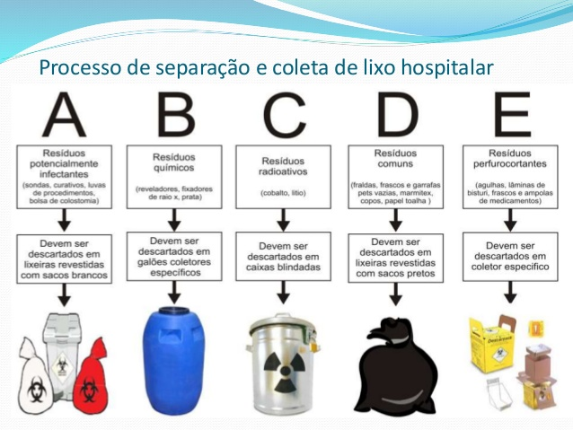
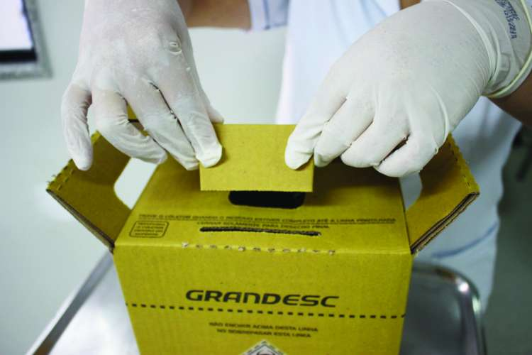

É todo resíduo gerado em ambientes hospitalares tradicionais e em ambientes hospitalares domésticos (incluindo clínicas veterinárias), além de alguns locais de pesquisa e laboratórios de farmacologia. Por vir de ambientes hospitalares, oferece grande risco de infecção e/ou contaminação, e portanto não podem ser tratados como lixo comum.
Alguns exemplos de lixo hospitalar são materiais biológicos contaminados com sangue ou patógenos, peças anatômicas, seringas e outros materiais plásticos; além de várias substâncias tóxicas, inflamáveis e até radioativas.
De acordo com o site "Estudo Prático", o lixo hospitalar pode ser classificado em três tipos, sendo eles os resíduos infecciosos, os resíduos especiais e os resíduos gerais ou comuns:
O que acaba se tornando "lixo hospitalar" é/são materiais utilizados na área da saúde, tanto em centros de atendimento/hospitais, como em centros de pesquisa e laboratórios. Sem eles os tratamentos e pesquisas teriam suas eficácias reduzidas a níveis incrívelmente baixos, e na atualidade são completamente essenciais. Todavia, por tratar de materiais com finalidade para a área da saúde, podem causar doenças e infecções caso sejam descartados de maneira imprópria.

Já que o lixo hospitalar não trata de um único material, é impossível dizer o tempo de decomposição do mesmo, ainda mais considerando-se que um mesmo produto/objeto, como uma simples seringa para coleta de sangue, é formado por partes de borracha, metal, plástico, etc. Por esse mesmo motivo deve-se aumentar a atenção e o cuidado com o manuseamento e descarte desse tipo de lixo, que pode não apenas causar danos severos ao ambiente, como à saúde.
Os resíduos hospitalares podem apresentar grande risco à saúde humana e ao meio ambiente, se não forem descartados de maneira correta, podendo provocar infecções, disseminar doenças, poluir o solo e a água.
Fazendo-se o descarte de lixo hospitalar de acordo com as regras nacionais determinadas pela Anvisa (Agência Nacional de Vigilância Sanitária), é possível evitar danos ambientais e acidentes biológicos de pequena e até grande escala, não sendo apenas vantajoso para o meio ambiente, como diretamente para a saúde da população.
De acordo com um estudo realizado pelo Hospital Albert Einstein, "o maior risco ambiental a partir dos resíduos hospitalares está representado pela presença de agentes biológicos, como sangue e derivados, secreções e excreções humanas, tecidos e peças anatômicas.
O contato destes materiais com o solo ou a água pode provocar contaminações no ambiente, comprometendo rios, lagos e até mesmo lençóis freáticos, prejudicando todos que tiverem contato com essa água.
Quando o descarte de resíduos perfurantes, contaminados com patógenos ou infecciosos é incorreto em aterros comuns, ocasionam grandes riscos aos catadores de lixo, que podem ser contaminados com o contato desses materiais."
Antes de tudo, nem todo material hospitalar é igual ao outro. Deve-se separar o lixo infectante dos lixos hospitalares comuns. Os materiais mais perigosos são separados em sacos plásticos especiais e etiquetados como resíduos infectantes e resíduos radioativos. Ambos serão incinerados, porém o material radioativo será primeiro armazenado até atingir níveis de radiação aceitáveis. Já os materiais farmacêuticos são direcionados de volta a seus fabricantes para o correto descarte. E os materiais perfurocortantes são colocados em caixas de papelão especiais.
A esterilização também é uma opção, até mesmo mais segura e ambientalmente viável que a incineração, entretanto, seu alto custo faz com que seja raramente utilizada.
